포켓몬 마을 설명서
마을에서 뭘 하는지 알려 줄게!
아래 다음 ▶을 눌러 한 장씩 넘겨 봐.
보고 싶은 것만 골라 봐도 돼.
🔒 마을은 언제 열려?
오늘 일일미션을 다 풀면 열려.
첫 화면의 🏡 포켓몬 마을을 눌러 들어가.
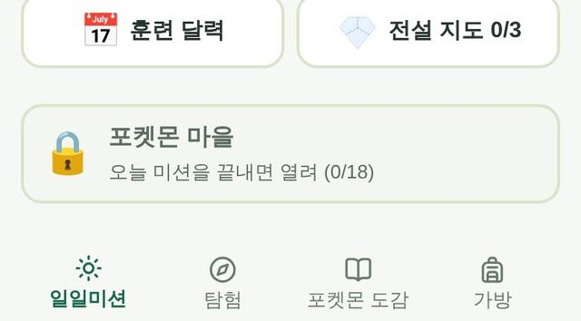
🚶 걷기 · 나가기
- ▲ ◀ ▶ ▼ 버튼으로 걸어.
- 서준이가 걷고 파트너가 따라와.
- 나갈 땐 위쪽 나가기를 눌러.
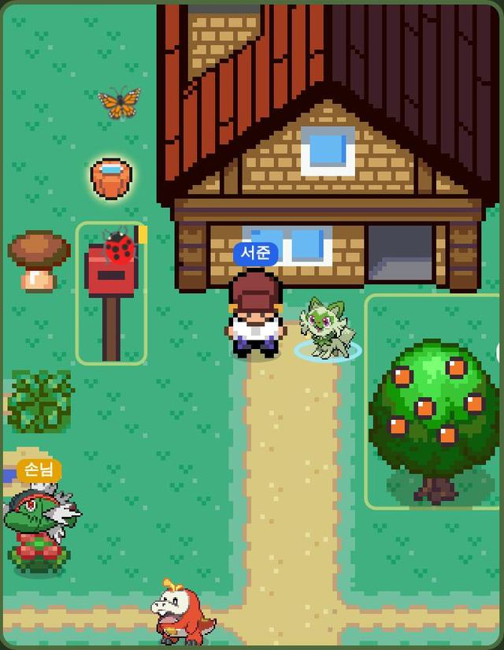
✨ 노랗게 반짝이면 눌러 봐
- 🍎 열매나무 → 열매 따기
- 🪨 회색 바위 → 돌멩이 캐기
- 📮 우편함 → 택배 받기
- 🐾 손님 → 말 걸기
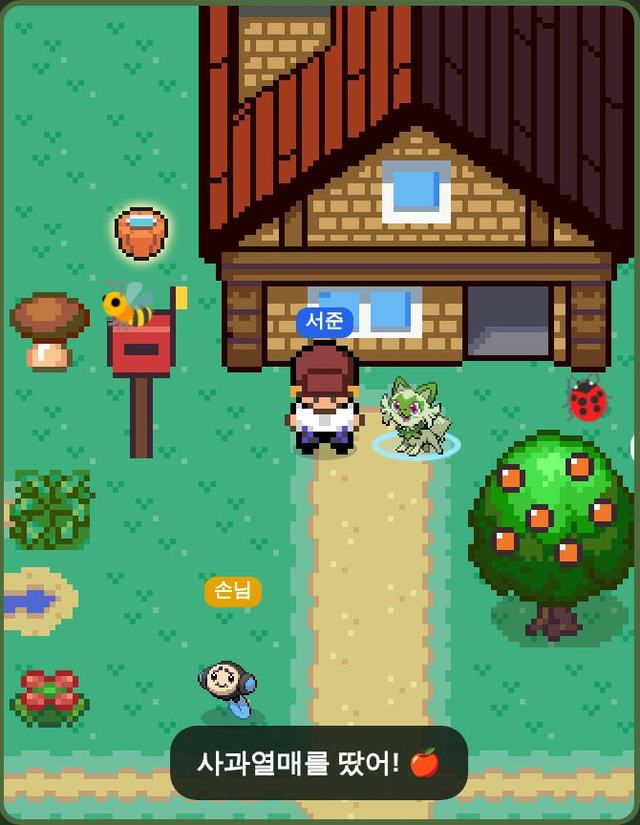
🍃 땅에 떨어진 재료 줍기
반짝이는 재료가 있는 칸으로 걸어가면 저절로 주워.
하루에 3개 주울 수 있어.
위쪽에 "줍기 ○개 남음"이 보여.
🪨 바위에서 돌멩이 캐기
회색 바위를 눌러 봐.
돌멩이가 나와! 하루에 5개까지야.
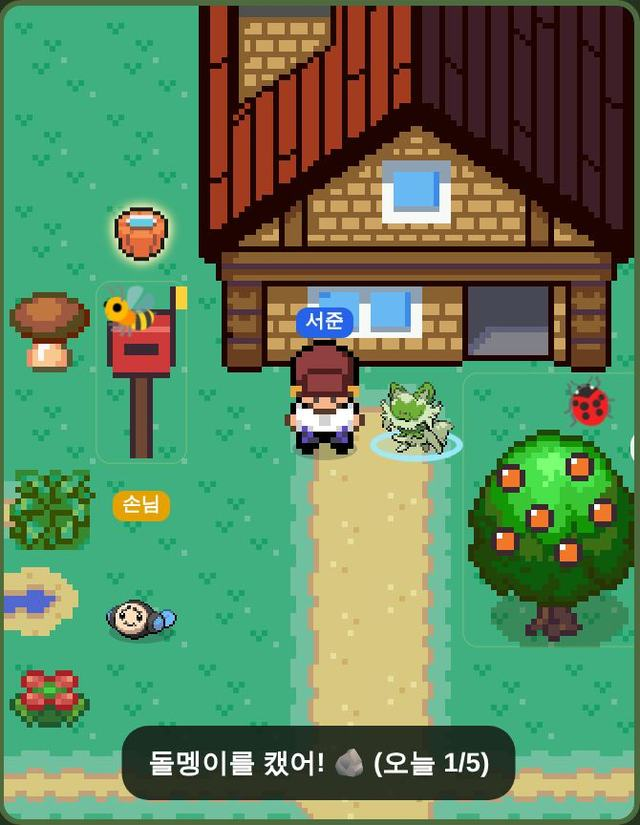
🍎 열매 따기
미션을 끝낸 날, 나무마다 1개 열려.
안 따면 다음 날 사라져. 괜찮아!
🐾 손님에게 말 걸기
"손님" 표시가 있는 포켓몬을 눌러.
좋아하는 것을 알려 줘.
가끔 열매를 선물로 줘! 🎁
손님마다 하루에 한 번이야.
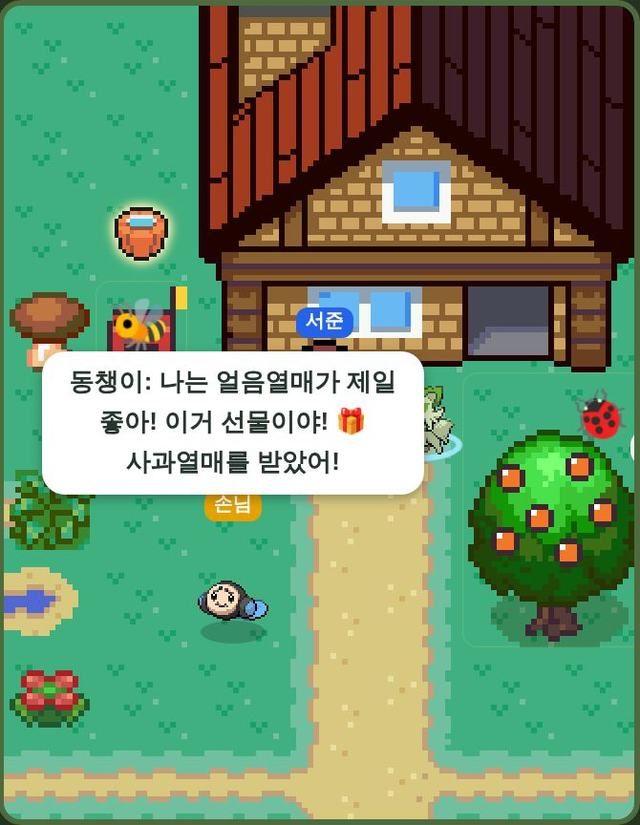
🎒 재료는 어디서 나와?
- ✅ 문제를 처음에 맞히면 가끔
- 🏁 일일미션을 끝내면 2개
- 🍃 마을에서 줍기
- 🪨 바위 캐기 = 돌멩이
- 🎣 낚시 = 물방울 · 진흙
- 🦋 벌레잡기 = 꽃잎 · 풀잎
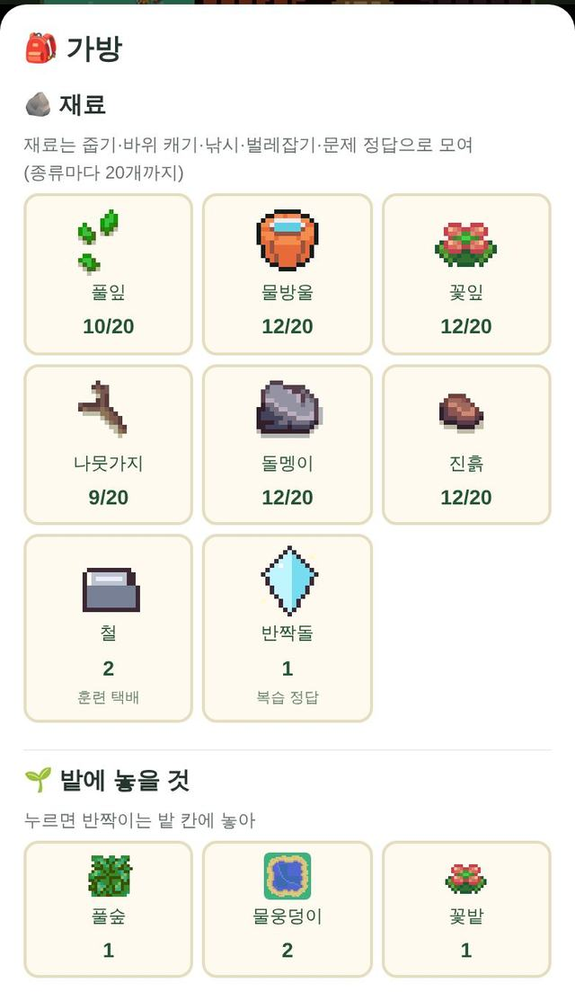
💎 공부해야 생기는 재료
반짝돌 💎
이틀 뒤 다시 나온 문제를 처음에 맞히면 1개!
오늘 미션을 하나도 안 틀리면 1개!
하루에 2개까지야.
철 🔩 (우편함 택배)
트레이너 훈련을 열심히 한 주에 와.
미션을 한 주에 5일 끝내도 와!
🔨 만들기
재료로 물건을 만드는 곳이야.
칸이 4개 있어.
🌱 서식지 · 🎨 꾸미기 · ⛰️ 땅 · 🧰 도구
만든 건 🎒 가방에 들어가.
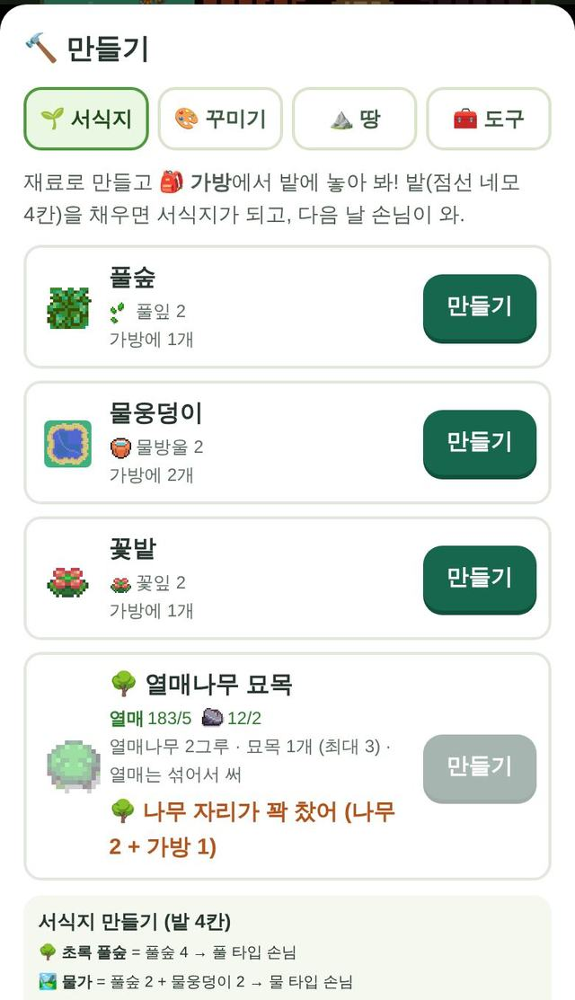
🎒 가방에서 놓기
가방에서 물건을 눌러.
노랗게 반짝이는 칸을 누르면 놓여!
놓은 걸 다시 누르면 가방으로 돌아와.
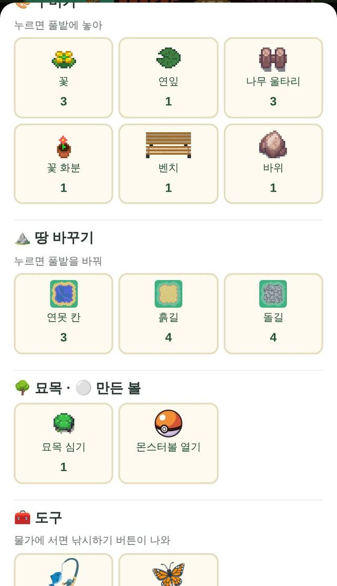
🌱 서식지를 만들면 손님이 와
점선 네모 밭 4칸을 채워 봐.
🌳 풀숲 4개 → 풀 타입 손님
🌳 풀숲 2 + 🫧 물웅덩이 2 → 물 타입 손님
🌼 꽃밭 4개 → 벌레 · 페어리 손님
다음 날 손님이 놀러 와!
손님은 내 포켓몬이 아니야. 📖 방명록에 적혀.
🌳 열매나무 심기
🔨 만들기 → 🌱 서식지 칸 맨 아래에 있어.
열매 5 + 돌멩이 2로 묘목을 만들어.
열매는 아무거나 섞어도 돼.
나무 자리가 꽉 차면 버튼 옆에 이유가 나와. 땅을 넓히면 자리가 늘어나!
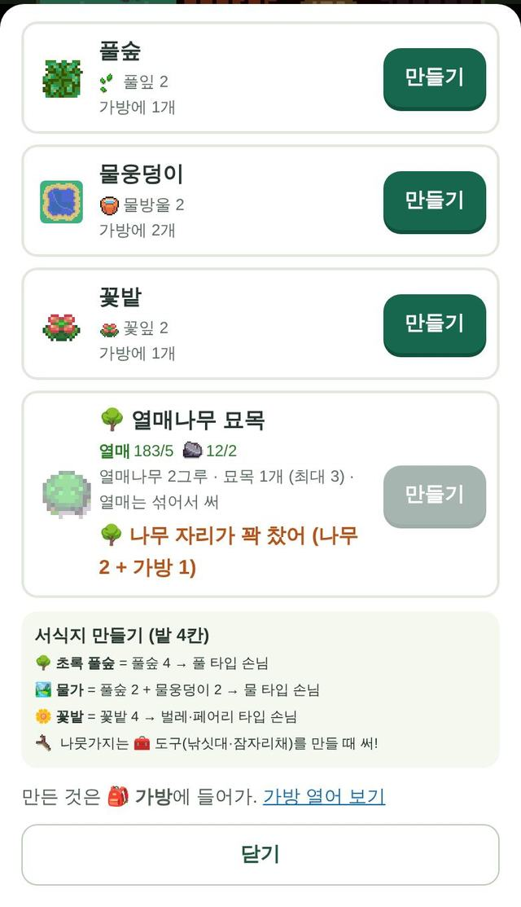
🎨 꾸미기 · ⛰️ 땅 바꾸기
꽃, 울타리, 벤치로 마을을 꾸며 봐.
⛰️ 땅 칸에서는 연못, 흙길, 돌길을 만들어.
붙여 놓으면 길과 연못이 이어져!
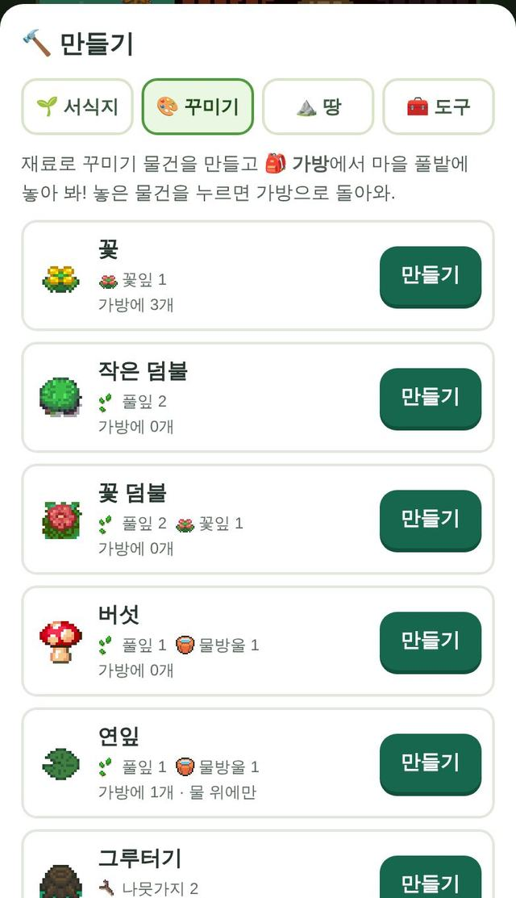
🔮 제작대에서 볼 만들기
제작대에서는 볼만 만들어.
"열매 183/10"은 열매를 다 합쳐 183개 가졌다는 뜻이야.
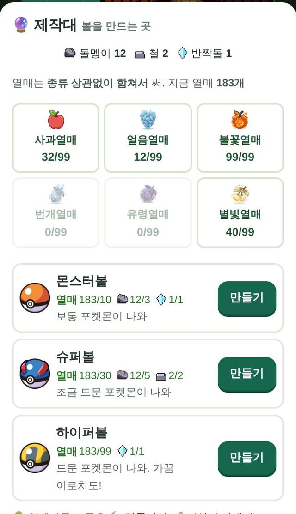
⚪ 만든 볼을 열면?
아직 도감에 없는 포켓몬이 나와!
마을에서 만난 포켓몬이 먼저 나와.
하이퍼볼일수록 드문 포켓몬이야.
가끔 ✨ 이로치도 나와!
볼은 🎒 가방에서 눌러 열어.
📖 방명록
마을에 놀러 온 포켓몬이 적혀.
낚시, 벌레잡기로 만난 포켓몬도!
"?"는 아직 안 온 친구야.
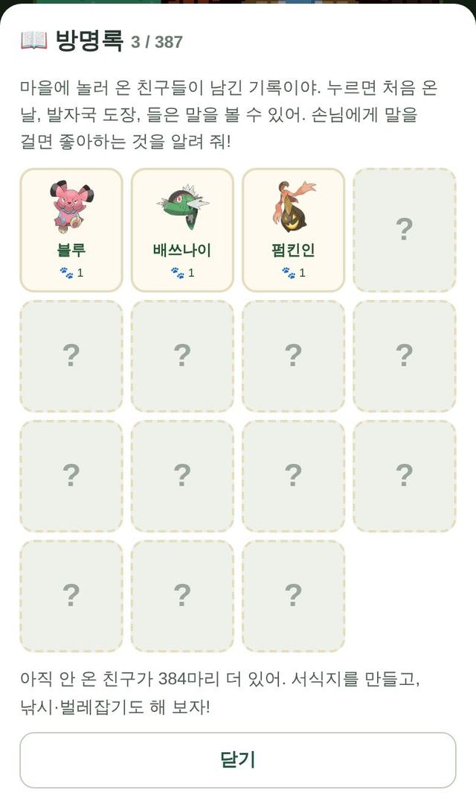
🐾 포켓몬을 눌러 봐
- 📅 처음 온 날
- 🐾 온 횟수 (하루에 도장 하나)
- 💗 좋아하는 열매 · 물건
- 💬 들은 말
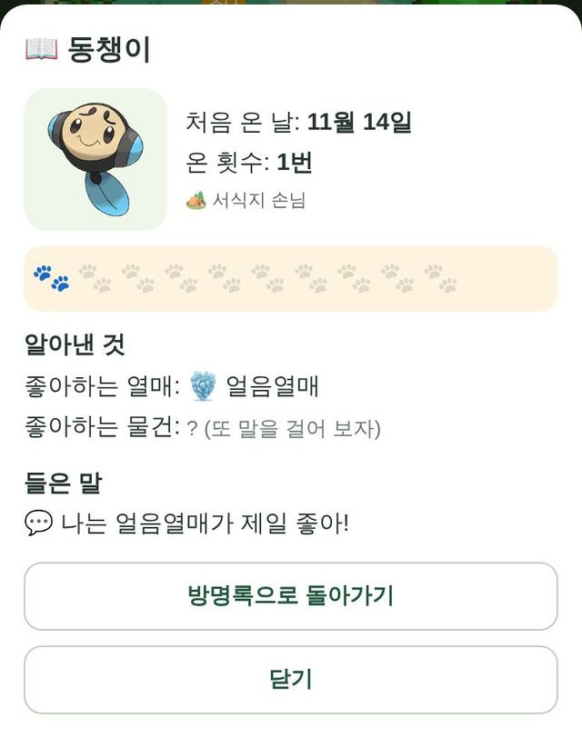
🧰 낚싯대 · 잠자리채 만들기
🔨 만들기 → 🧰 도구 칸에서 만들어.
🎣 낚싯대 = 나뭇가지 3 + 풀잎 2
🦋 잠자리채 = 나뭇가지 2 + 꽃잎 2
도구는 15번 쓰면 부서져. 놓쳐도 1번 닳아. 다시 만들면 돼!
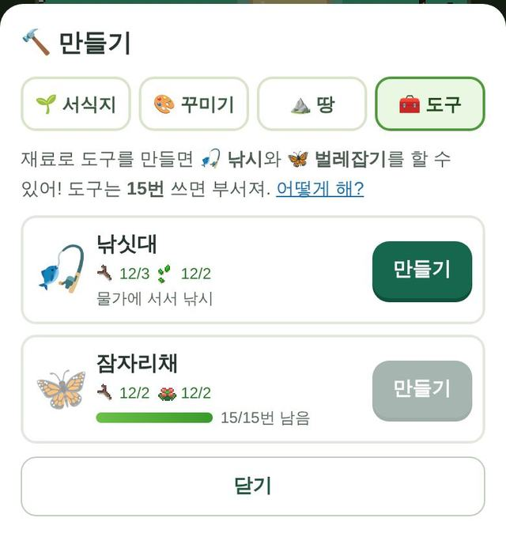
🦋 벌레잡기
날아다니는 벌레를 눌러.
▼ 화살표가 초록 칸에 오면 "휘둘러!"
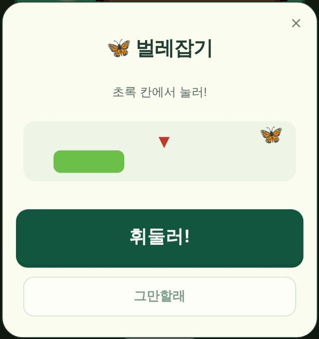
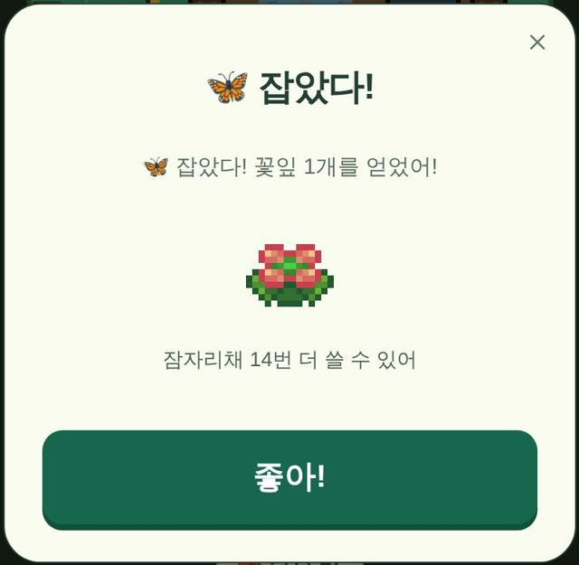
🎣 낚시
물 옆에 서면 🎣 낚시하기 버튼이 나와.
찌가 퐁! 하면 바로 "당겨!"
너무 빨라도, 늦어도 놓쳐.
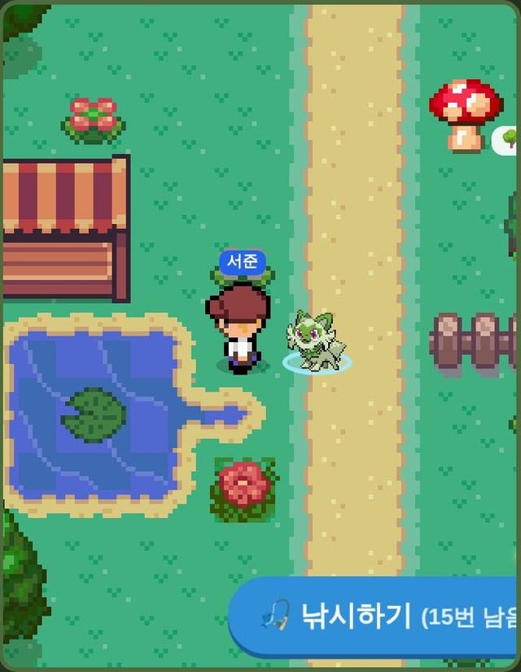
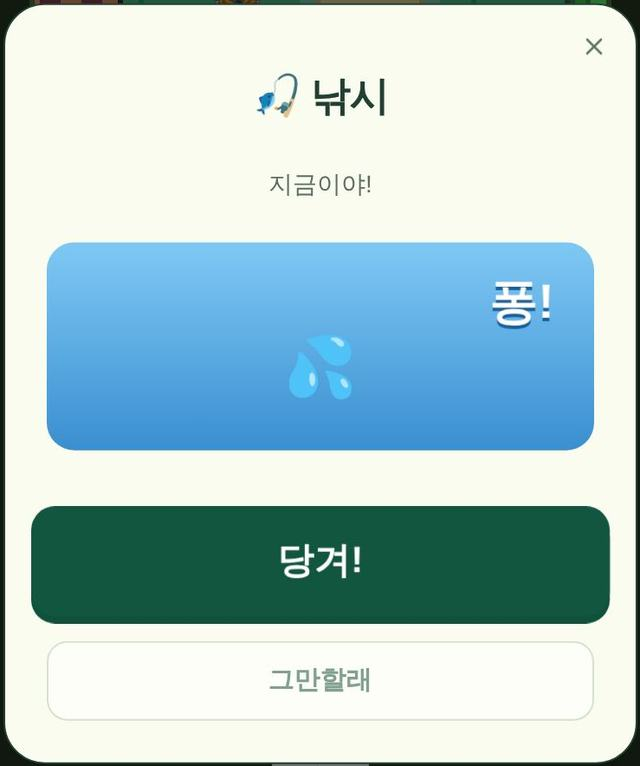
🎁 잡으면 뭐가 나와?
재료가 나와. 가끔 열매도!
가끔 포켓몬을 만나. 📖 방명록에 적혀!
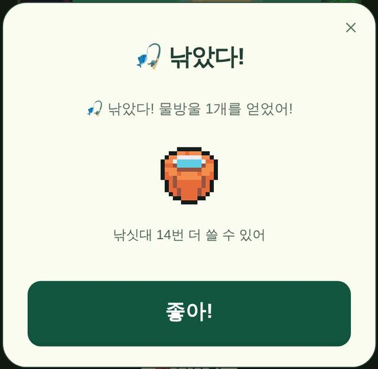
🏠 마을점수
- 처음 보는 손님 → 🏠 3
- 손님이 온 서식지 → 🏠 2
- 물건 만들기 → 🏠 1
- 볼 · 묘목 만들기 → 🏠 2
- 열매 따기 → 🏠 1
마을점수가 모이면 마을 레벨이 올라!
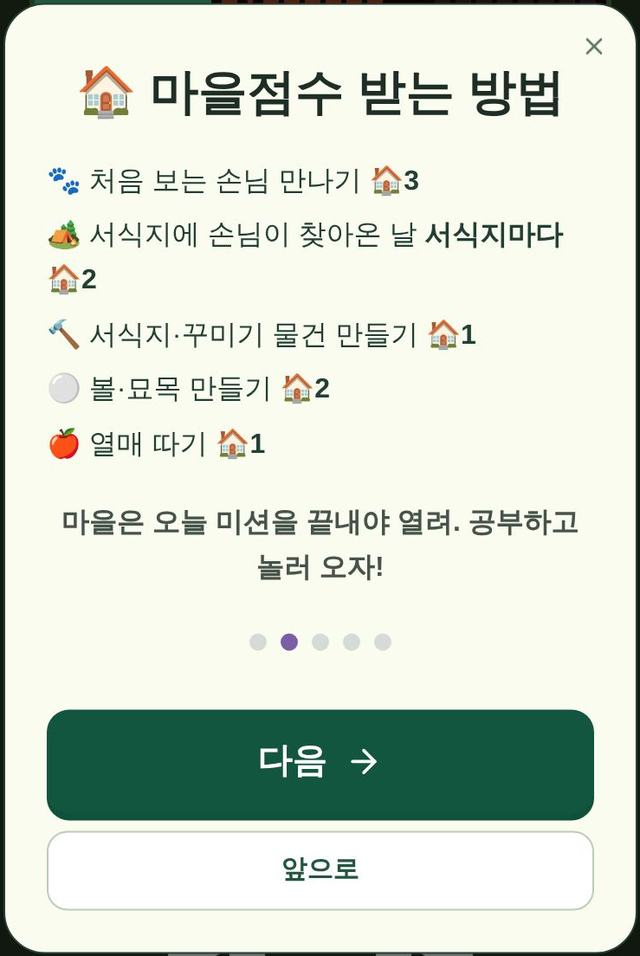
🔑 열쇠로 땅 넓히기
레벨이 오르면 🔑 열쇠 1개!
붙어 있는 🔒 땅 중에 하나를 골라 열어.
왼쪽, 오른쪽, 아래 중에서 골라.
위쪽 ❓를 누르면 다시 볼 수 있어.
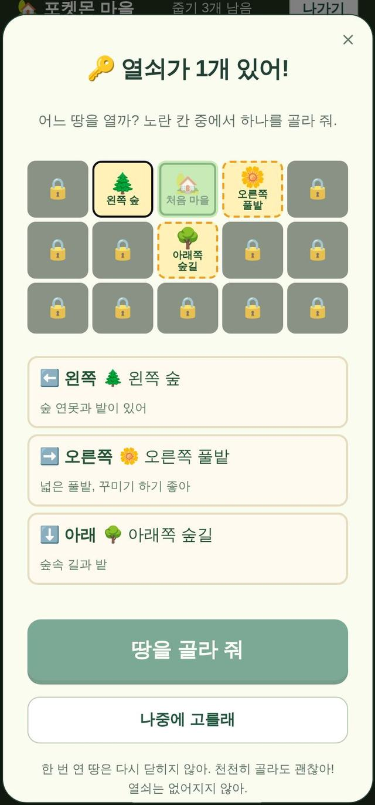
🍎 포켓몬에게 먹이기
먹이기는 마을이 아니라 첫 화면 가방에서 해.
열매를 누르고, 먹일 포켓몬을 골라.
- ⚡ 에너지 +5
- 💗 +5
- 배틀 힘 ★ +1
마을 가방의 열매는 보기만 해. 열매는 볼 만들 때도 써!
😮 실수로 나가졌어!
괜찮아! 마을에 있었으면 다시 마을로 돌아와.
포켓로그는 다시 들어가서 이어하기를 눌러.
게임을 끌 땐 폰의 홈 버튼을 눌러.
이제 마을에서 놀아 보자!